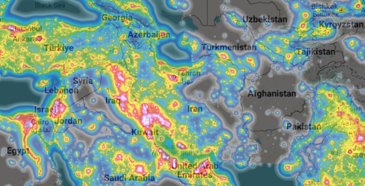

چرا آسمان تاریک مهم است؟
آسمان پرستاره تنها مورد علاقه انسانهای کنجکاو نیست بلکه مناطقِ آسمان تاریک زیستگاه بسیاری از جانداران است که به تاریکی آسمان شب برای بقای خود نیاز دارند. تلاش برای مبارزه با آلودگی نوری نه تنها برای امور علمی اهمیت دارد که نوعی فعالیت در راستای حفظ محیط زیست نیز محسوب می شود.
برای رصدگر، پیدا کردن جای تاریک اولین قدم است: در آسمان شهر دهها هزار ستاره دیده نمیشود و کهکشان راه شیری و اجرام کمنور کاملاً محو میشوند. نقشهی زیر نشان میدهد نور شبانه در کدام بخشهای ایران بیشتر و در کدام بخشها کمتر است.
نقشهی آلودگی نوری ایران

نقشهی تعاملی در سایت دیگری و به زبان انگلیسی باز میشود. در بخش بعد توضیح دادهایم کدام لایهها برای رصدگر مفید است.
کدام لایهها به کار رصدگر میآید؟
- VIIRS
- نور شبانهی اندازهگیریشده توسط ماهواره. بهترین لایه برای دیدن اینکه شهرها، جادهها و صنایع چقدر نور به آسمان میفرستند. میتوانید سالهای مختلف را مقایسه کنید.
- Sky Brightness
- درخشندگی تخمینی آسمان بر حسب SQM. این لایه نشان میدهد آسمان یک منطقه در عمل چقدر تاریک است، نه فقط چقدر نور روی زمین هست.
- Find closest dark site
- در بخش Tools؛ نزدیکترین نقطهی تاریکتر از آستانهای که انتخاب میکنید را از محل شما پیدا میکند. برای برنامهریزی گشت رصدی مفید است.
- SQM و Dark sky parks
- اندازهگیریهای واقعی رصدگران در نقاط مختلف و پارکهای آسمان تاریک ثبتشده. اگر در منطقهی شما اندازهگیری ثبت شده، قابلاعتمادتر از تخمین ماهوارهای است.
مقیاس بورتل و SQM یعنی چه؟
SQM عددی است که تاریکی آسمان را بر حسب قدر بر ثانیهی قوسی مربع میسنجد؛ هرچه عدد بزرگتر باشد آسمان تاریکتر است. مقیاس بورتل (Bortle) همین را به نه رده تقسیم میکند.
| ردهی بورتل | وضعیت آسمان | SQM تقریبی |
|---|---|---|
| ۱ و ۲ | آسمان کاملاً تاریک؛ راه شیری سایه میاندازد | بیش از ۲۱٫۵ |
| ۳ | روستایی؛ فقط افقها کمی روشن است | ۲۱٫۳ تا ۲۱٫۵ |
| ۴ | حومهی روستایی؛ راه شیری هنوز پرجزئیات است | ۲۰٫۸ تا ۲۱٫۳ |
| ۵ | حومهی شهر؛ راه شیری ضعیف شده | ۲۰٫۳ تا ۲۰٫۸ |
| ۶ | حومهی روشن؛ راه شیری فقط نزدیک سرسو دیده میشود | ۱۹٫۵ تا ۲۰٫۳ |
| ۷ | مرز شهر و حومه؛ آسمان خاکستری | ۱۸٫۹ تا ۱۹٫۵ |
| ۸ و ۹ | آسمان شهر؛ فقط روشنترین ستارهها دیده میشوند | کمتر از ۱۸٫۹ |
این بازهها تقریبی است و در منابع مختلف کمی تفاوت دارد؛ آنها را به عنوان راهنما در نظر بگیرید. رنگها هم فقط برای شناسایی آسانِ ردیفها آمدهاند و ممکن است با رنگ لایههای نقشه یکی نباشند.
مقالههای آسمان تاریک در دست تهیه است
در حال جمعآوری و نوشتن مقالههایی هستیم که به این موضوعها میپردازند:
- دلایل گسترش آلودگی نوری
- راهکارهای کاهش آلودگی نوری
- آلودگی نوری و محیط زیست
- آلودگی نوری و اقتصاد
هر مقاله که آماده شد در بخش اخبار منتشر و از همین صفحه لینک میشود. برای اطلاع از انتشار میتوانید ما را در تلگرام و اینستاگرام دنبال کنید.
منبع نقشه و دادهها: lightpollutionmap.info (ساختهی یوری استاره)، دادهی شبانهی ماهوارهای VIIRS از NASA و NOAA و اطلس جهانی درخشندگی مصنوعی آسمان شب (Falchi و همکاران، ۲۰۱۶). گروه نجوم کاوش مالک این دادهها نیست و فقط آنها را معرفی میکند.